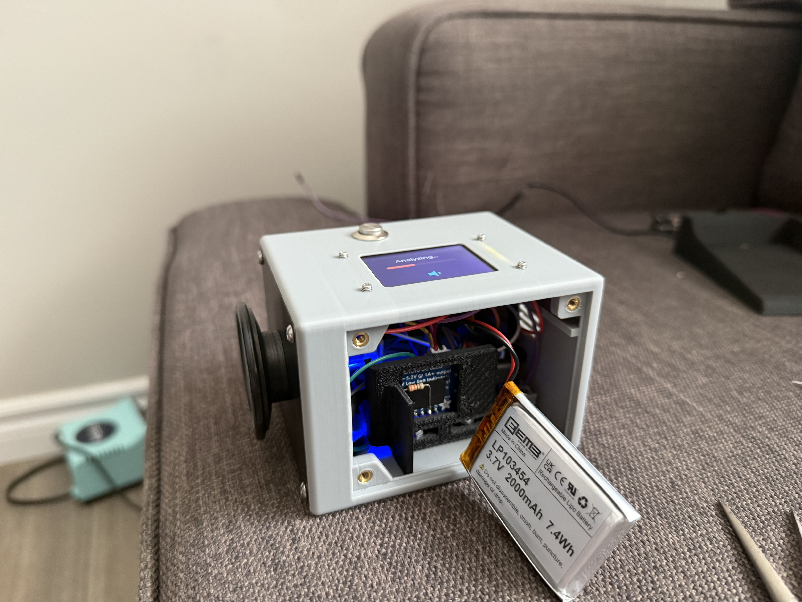
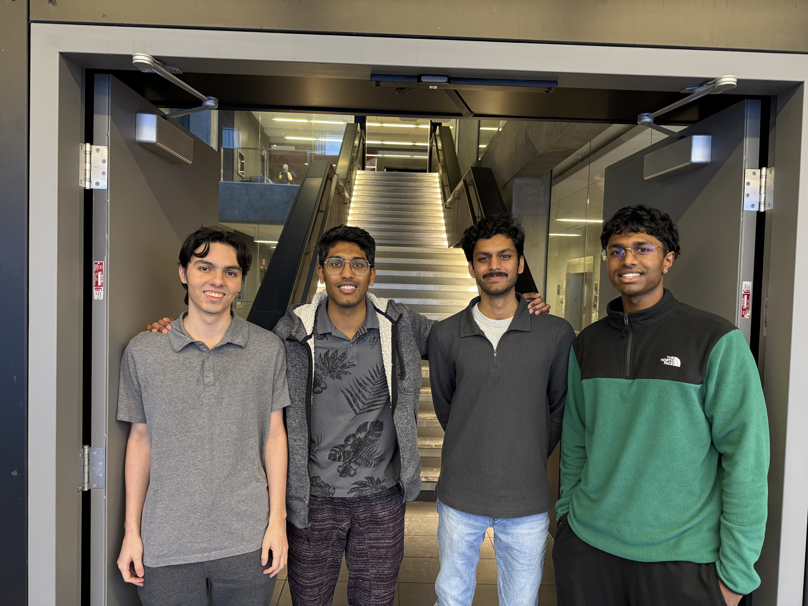

CardioScope is an automated stethoscope system that leverages custom machine learning models to detect heart murmurs locally on-device.

Real-time auscultation analysis and mobile synchronization.
A hybrid classification approach combining on-device processing with cloud-level neural accuracy.
85.5% Specificity achieved via a 24-layer residual network trained on clinical heart sound datasets.
Optimized ESP32 firmware using FreeRTOS and ESP-DSP for hardware-accelerated filtering.
BLE 5.0 communication between the custom hardware module and the CardioScope mobile app.
Sensitivity
Specificity
Accuracy
Engineering the future of cardiovascular diagnostics.
